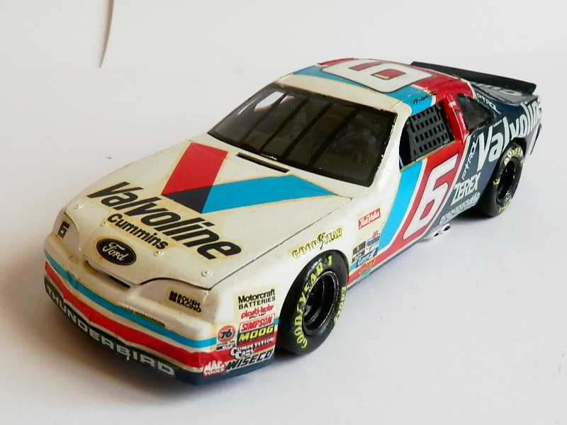
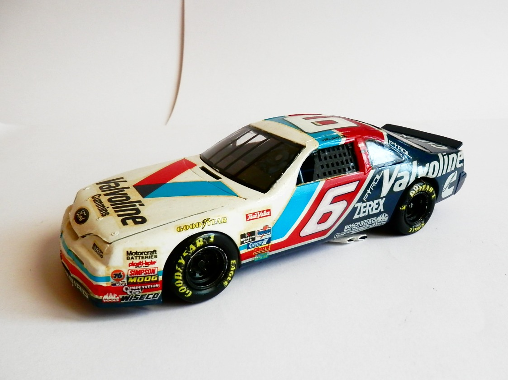
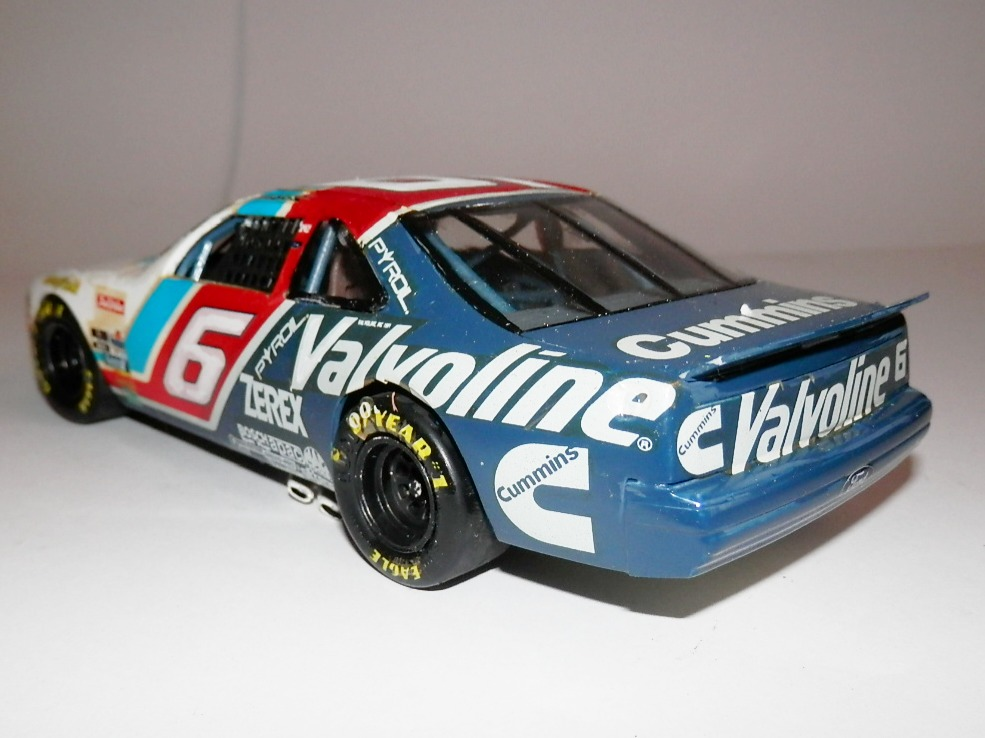
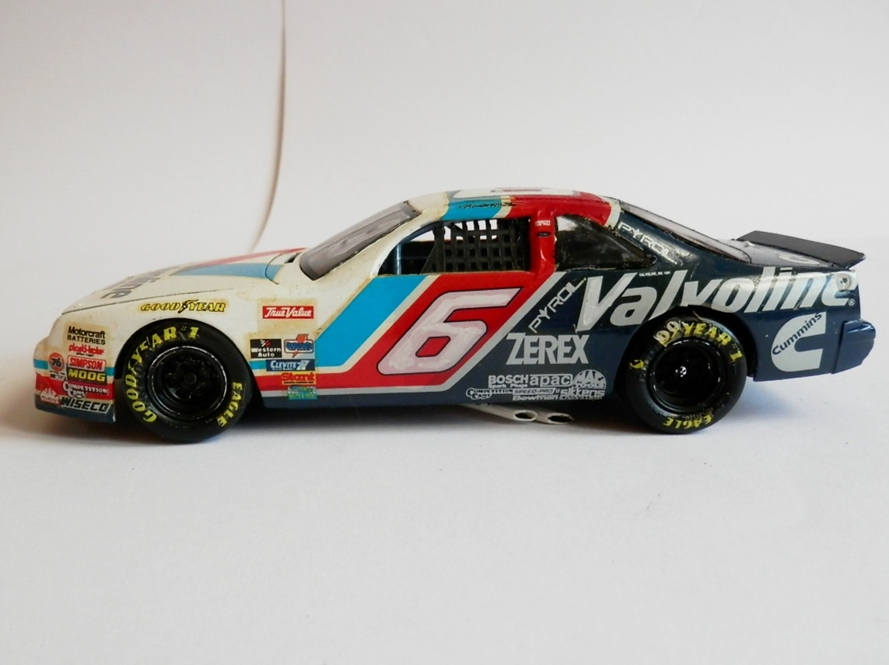

Auto e veicoli stradali · scale model archive
Ford Taurus Sock Car 'Valvoline'
Ford Taurus Sock Car 'Valvoline' — Kit: AMT-Ertl, Scale: 1/25. Driver: Mark Martin

Photo gallery



English description
Driver: Mark Martin
Descrizione italiana
Pilota: Mark Martin.